Graphic design e UX/UI
Una selezione di progetti di identità visiva e design digitale. Ogni lavoro mi ha permesso di esplorare un’esigenza diversa e cercare una soluzione funzionale e riconoscibile.
Sunnee Beachwear
Brand Identity · Logo · Social media
Sunnee Beachwear è un concept di beachwear sostenibile ispirato al sole e al mare. Ho progettato l’identità visiva, dal logo agli elementi grafici e ai contenuti social, per comunicare un’immagine contemporanea e coerente con i valori del brand.
Guarda la presentazione completa di Sunnee Beachwear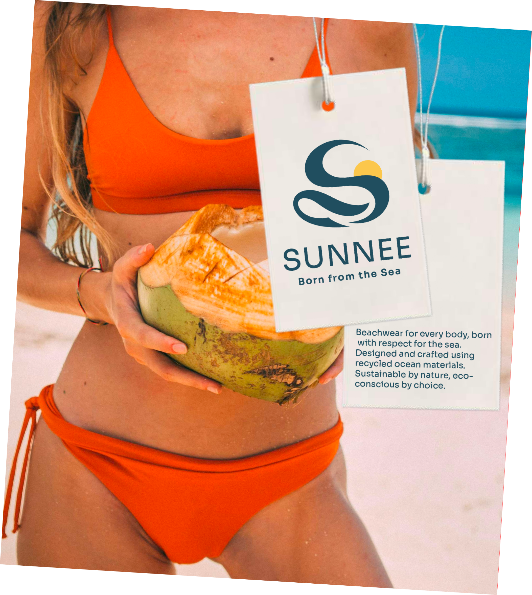
Logo costruzione
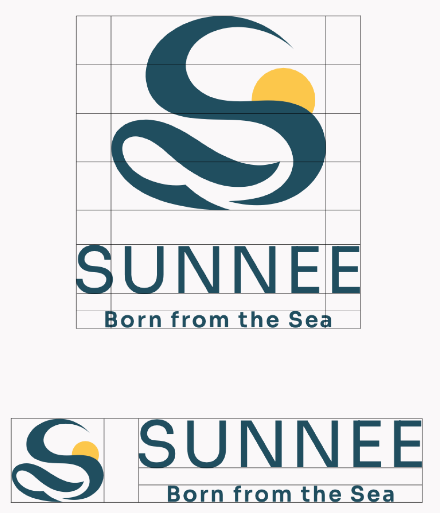
Palette colore
La palette cromatica di Sunnee nasce dall’incontro tra mare, sole e natura.
Il blu petrolio è il colore dominante e rappresenta il mare e l’impegno del brand verso la sostenibilità.
Il giallo sole, elemento distintivo del logo, introduce vitalità e dinamismo.
I colori secondari: beige sabbia, verde, azzurro e rosa, completano la palette e permettono flessibilità visiva mantenendo coerenza e riconoscibilità.
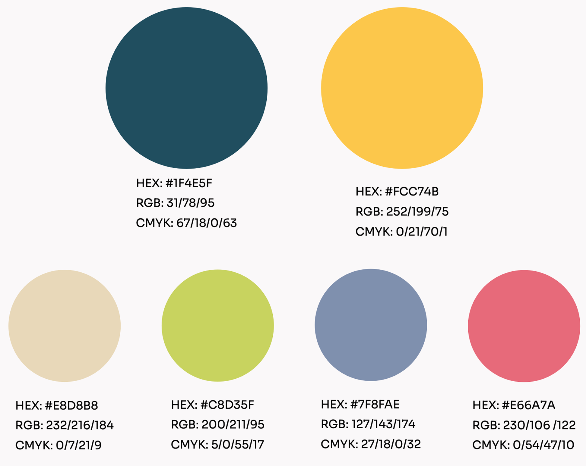
Sistema tipografico
Sunnee adotta un sistema tipografico mono-font basato su Sora, un carattere sans serif moderno e versatile.
L’utilizzo di un’unica famiglia garantisce coerenza visiva, leggibilità e flessibilità su tutte le linee di prodotto.
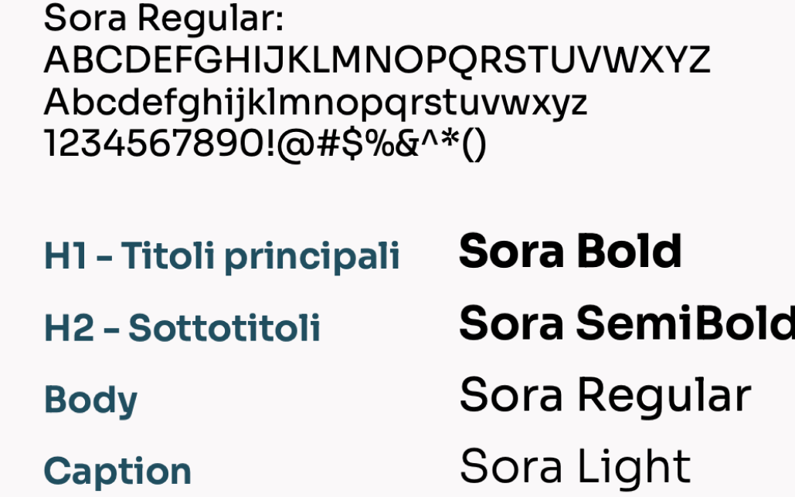
Ecodream design
Ecodream design è un progetto di riprogettazione di un sito e-commerce di borse sostenibili, sviluppato attraverso cinque fasi. Il percorso parte dalla ricerca sul sito e sugli utenti, approfondisce le esigenze di accessibilità e prosegue con la progettazione delle pagine desktop e mobile. Le interfacce sono state poi trasformate in prototipi e valutate attraverso un test di usabilità.
User Interface
Partendo dai wireframe, ho progettato cinque interfacce ad alta fedeltà per desktop e cinque per mobile. Ho definito colori, tipografia, componenti e stati interattivi cercando di migliorare la chiarezza del sito e mantenere riconoscibile l’identità di Ecodream.
Ho collegato le schermate in prototipi navigabili che permettono di seguire un percorso dalla Home alla scheda prodotto. La versione mobile comprende anche un menu hamburger apribile e richiudibile, con collegamenti alle pagine progettate.
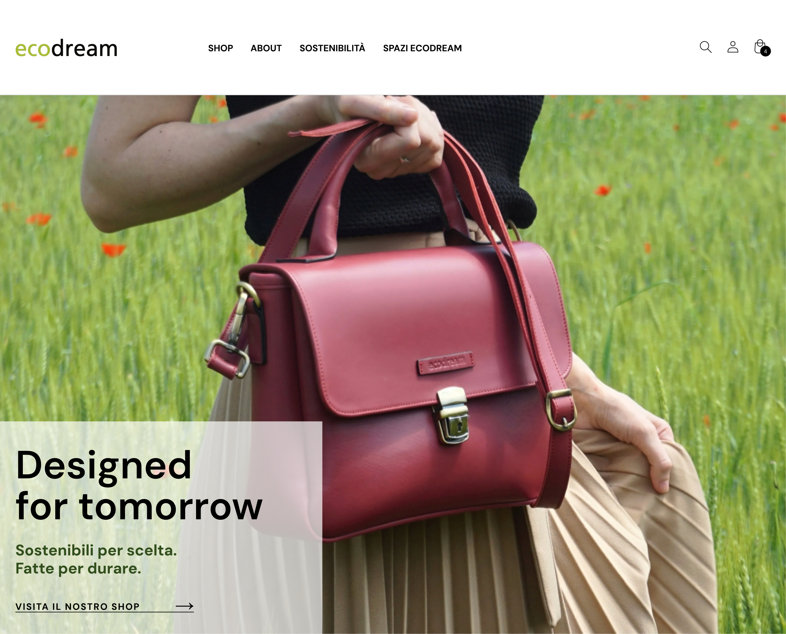
La Homepage comprende:
Header di navigazione, con logo Ecodream, collegamenti alle sezioni principali del sito e icone dedicate a ricerca, account e carrello.
Hero section, caratterizzata da un’immagine fotografica a tutta larghezza, dal messaggio principale “Designed for tomorrow”, da un breve testo sul posizionamento sostenibile del brand e dalla CTA “Visita il nostro shop”.
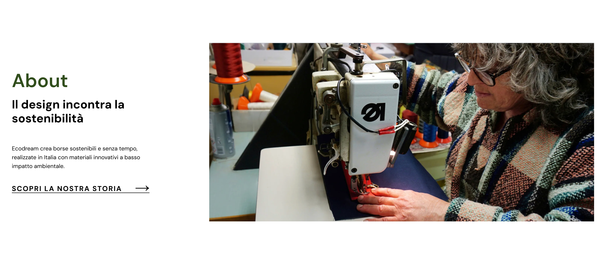
Sezione About, che introduce l’identità di Ecodream e il rapporto tra design e sostenibilità. La sezione presenta un breve testo, una fotografia del processo artigianale e il collegamento alla storia del brand.
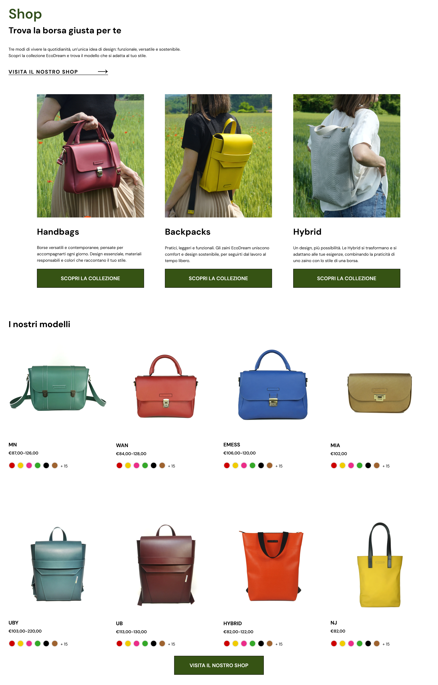
Sezione Shop, che presenta le collezioni di borse attraverso le categorie Handbags, Backpacks e Hybrid. Ogni categoria comprende un’immagine, una breve descrizione e una CTA per scoprire la collezione.
Sezione “I nostri modelli”, organizzata come una panoramica dei principali modelli Ecodream. Ogni prodotto presenta immagine, nome, fascia di prezzo e varianti cromatiche disponibili. Al termine della sezione vi è la CTA “Visita il nostro Shop” per indirizzare l’utente verso il catalogo completo.
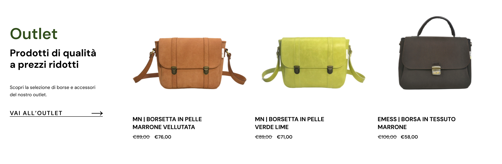
Sezione Outlet, che mette in evidenza una selezione di prodotti a prezzo ridotto, mostrando immagini, nomi e prezzi originali e scontati.
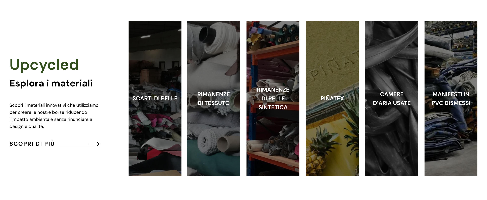
Sezione Upcycled, dedicata ai materiali recuperati e riutilizzati dal brand. La composizione comprende un testo introduttivo, una CTA di approfondimento e una sequenza fotografica dei diversi materiali.
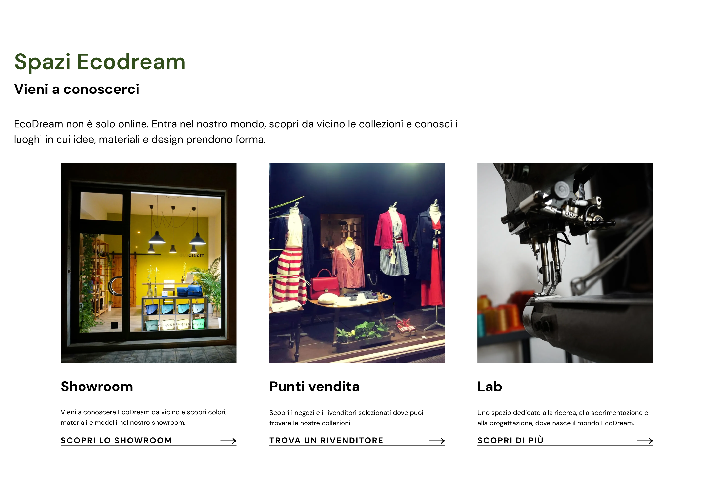
Sezione “Spazi Ecodream”, che invita l’utente a conoscere i luoghi fisici e le attività legate al brand, è composta da tre contenuti dedicati a Showroom, Punti vendita e Lab. Ogni card presenta un’immagine, una breve descrizione e un collegamento alla relativa pagina di approfondimento.
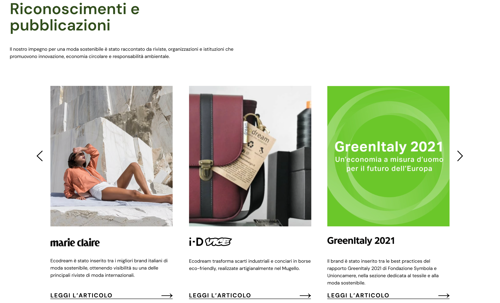
Sezione “Riconoscimenti e pubblicazioni”, che raccoglie articoli, collaborazioni e premi ottenuti dal brand.
Carosello editoriale, composto da tre card visibili e controlli laterali per scorrere gli altri contenuti. Ogni card include un’immagine, il nome della pubblicazione o del riconoscimento, un breve testo e il collegamento “Leggi l’articolo”.